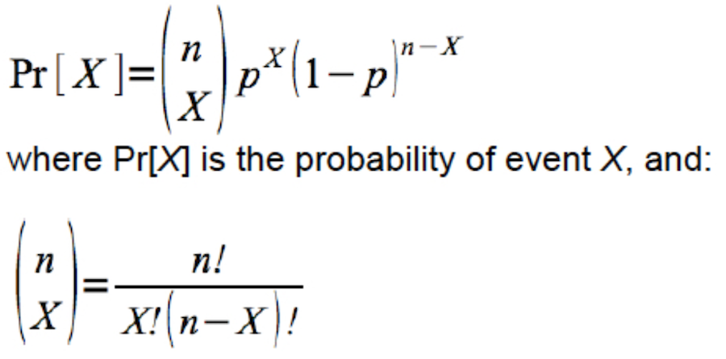
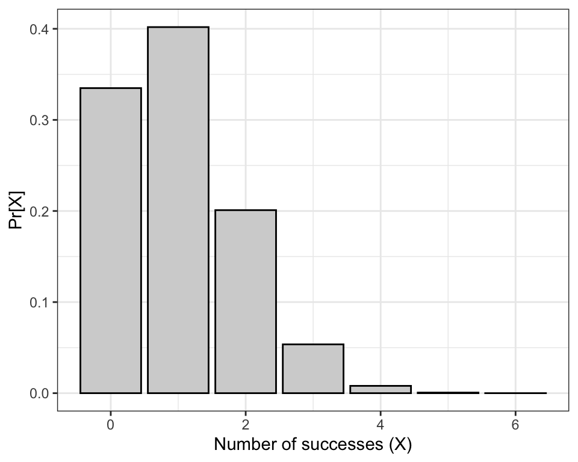
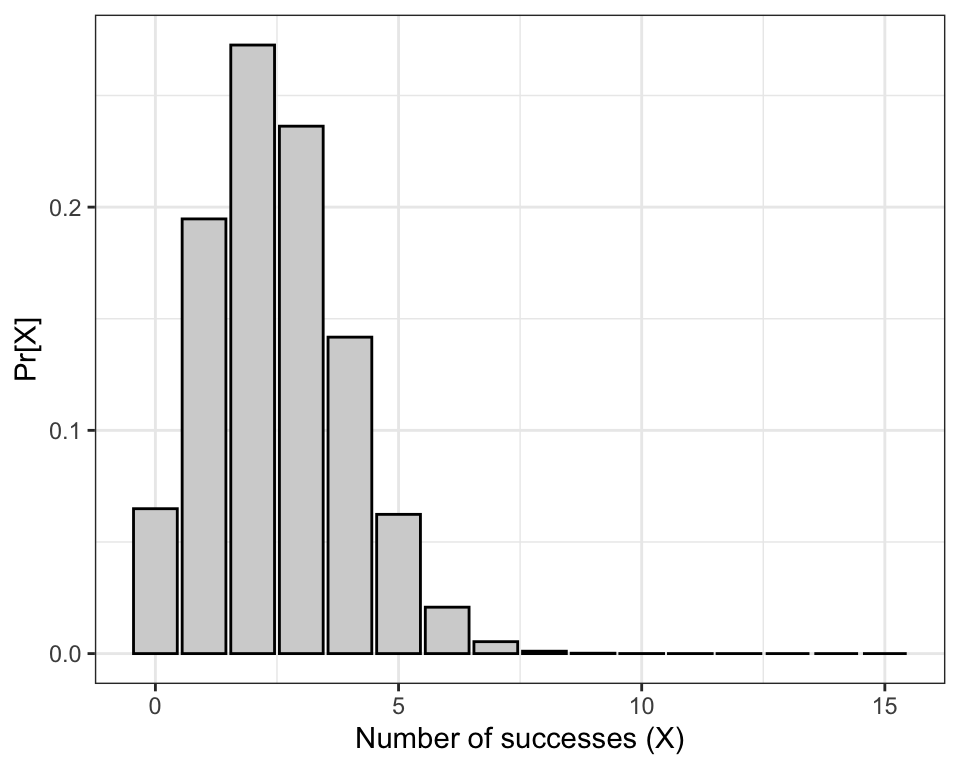
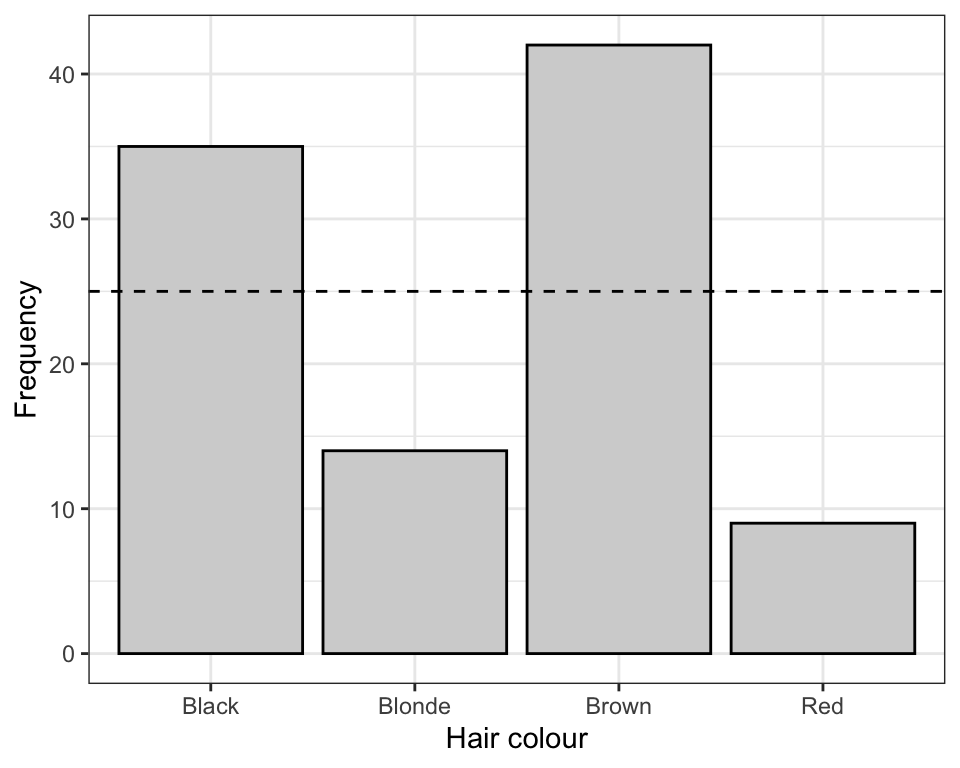

library(dplyr)
library(ggplot2)
library(readr)
library(knitr)
library(janitor)
library(biol202)10 Analyzing a single categorical variable
Tutorial learning objectives
- Learn how to calculate a standard error for a proportion
- Learn how to calculate a confidence interval for a proportion
- Learn about the binomial distribution and the
dbinomfunction - Learn how to test hypotheses about a proportion using the binomial test
- Learn an example of the confidence interval approach to hypothesis testing
- Learn how to conduct a \(\chi\)2 goodness of fit test using a proportional model
10.1 Load packages and import data
Load the packages we need for this tutorial:
We will also need a new package called binom, so install that package using the procedure you previously learned, then load it:
library(binom)Load the damselfly dataset we used in the preceding tutorial, and also the birds dataset we used in an earlier tutorial.
data(damselfly)
data(birds)Recall what the damselfly dataset looks like:
damselfly
#> # A tibble: 20 × 1
#> direction
#> <fct>
#> 1 clockwise
#> 2 counter_clockwise
#> 3 counter_clockwise
#> 4 clockwise
#> 5 counter_clockwise
#> 6 counter_clockwise
#> 7 counter_clockwise
#> 8 counter_clockwise
#> 9 counter_clockwise
#> 10 counter_clockwise
#> 11 counter_clockwise
#> 12 clockwise
#> 13 counter_clockwise
#> 14 counter_clockwise
#> 15 counter_clockwise
#> 16 counter_clockwise
#> 17 counter_clockwise
#> 18 counter_clockwise
#> 19 counter_clockwise
#> 20 counter_clockwiseThe data show the predominant direction (either clockwise or counter-clockwise) of 20 circular battles between male damseflies.
And remind yourself what the birds dataset looks like:
birds
#> # A tibble: 86 × 1
#> type
#> <fct>
#> 1 Waterfowl
#> 2 Predatory
#> 3 Predatory
#> 4 Waterfowl
#> 5 Shorebird
#> 6 Waterfowl
#> 7 Waterfowl
#> 8 Songbird
#> 9 Predatory
#> 10 Waterfowl
#> # ℹ 76 more rowsThese data describe the category of bird (variable “type” that has 4 different categories) for a random sample of 86 birds sampled at a marsh habitat.
10.2 Estimating proportions
Recall that the key descriptor for a categorical variable is a proportion. And when we wish to draw inferences about a categorical attribute within a population of interest, we take a random sample from the population to estimate the true proportion \({p}\) of the population with that attribute. Our estimate is denoted \(\hat{p}\).
In a previous tutorial we used the “birds” dataset to practice creating a “frequency table” that showed the relative frequencies of birds falling in each category of the categorical variable “type”. These relative frequencies are equivalent to their respective proportions.
So, for the birds dataset, let’s produce a frequency table, but instead of using the term “relative frequency” we’ll use “p_hat” to denote that this is our estimate of the proportion of birds in that category.
We’ll put the output in an object “bird.freq.table” then we’ll display it after:
bird.freq.table <- birds %>%
count(type, sort = TRUE) %>%
mutate(p_hat = n / sum(n))Now show the table:
kable(bird.freq.table, digits = 4)| type | n | p_hat |
|---|---|---|
| Waterfowl | 43 | 0.5000 |
| Predatory | 29 | 0.3372 |
| Shorebird | 8 | 0.0930 |
| Songbird | 6 | 0.0698 |
We can see that the proportion of birds at the marsh that belong to the “Predatory” category is about 0.34. Assuming we had a good random sample, this is our best estimate of the true proportion of marsh birds that are predatory.
Being an estimate, however, we need to attach some measure of uncertainty to it.
In a previous tutorial we learned how to calculate the standard error and rule-of-thumb 95% confidence interval for the mean.
Here we’ll learn how to calculate these measures of uncertainty for a proportion.
10.2.1 Standard error for a proportion
Here’s the equation for the standard error for the proportion:
\[SE_{\hat{p}} = \sqrt{\frac{\hat{p}(1-\hat{p})}{n}}\]
Let’s use the “birds” dataset to demonstrate the calculation.
Let’s re-create the table again:
bird.freq.table <- birds %>%
count(type, sort = TRUE) %>%
mutate(p_hat = n / sum(n))Show the table:
kable(bird.freq.table, digits = 4)| type | n | p_hat |
|---|---|---|
| Waterfowl | 43 | 0.5000 |
| Predatory | 29 | 0.3372 |
| Shorebird | 8 | 0.0930 |
| Songbird | 6 | 0.0698 |
That table does show us our estimate of the proportion of birds that are predatory. We’ll isolate that value later.
But we also need to get the total sample size, i.e. the total number of birds sampled.
To do this, we need to make sure not to count any missing values. We use two base R functions together:
birds.sampsize <- sum(!is.na(birds$type))In the preceding code, reading from the inside out:
birds$typeselects the variable of interest,type, from thebirdstibble. The dollar sign is R’s way of picking one variable out of a dataset.is.na()asks, for every observation, “is this value missing?”, and returnsTRUEorFALSEfor each one- the
!means not, so!is.na()flips those answers around: it now returnsTRUEfor every value that is present sum()adds those up. R counts eachTRUEas 1 and eachFALSEas 0, so summing them counts the non-missing observations.- the result is stored in a new object called “birds.sampsize”
Note
sum(!is.na(x)) is worth committing to memory: it counts how many values of x are actually there. Its partner, sum(is.na(x)) (without the !), counts how many are missing. You will use both all term.
Now let’s see what the outcome was:
birds.sampsize
#> [1] 86Now that we have n (above), stored in the object “birds.sampsize”, we need to extract the “p_hat” value associated with the “Predatory” category, and we’ll store this in an object called “pred.phat”:
pred.phat <- bird.freq.table %>%
filter(type == "Predatory") %>%
select(p_hat)In the preceding chunk we:
- assign our output to an object “pred.phat”
- use the
filterfunction to get the rows where the “type” variable is equal to the “Predatory” category - use the
selectfunction to return (select) the “p_hat” variable only
Let’s look at what this produced:
pred.phat
#> # A tibble: 1 × 1
#> p_hat
#> <dbl>
#> 1 0.337So this produced a tibble called “pred.phat” with a variable “p_hat”, and it has one value - our proportion estimate \(\hat{p}\).
TIP: We could have calculated and isolated the “P-hat” value for predatory birds all in one go, using the following code:
pred.phat <- birds %>%
count(type, sort = TRUE) %>%
mutate(p_hat = n / sum(n)) %>%
filter(type == "Predatory") %>%
select(p_hat)That demonstrates the power of the pipe approach!
OK, now we’re ready to calculate \(SE_{\hat{p}} = \sqrt\frac{\hat{p}(1-\hat{p})}{n}\)
Here’s how we do this using basic R syntax, recalling that our “n” (86 birds total) is stored in the object “birds.sampsize”.
We’ll store the value in a new object called “SE_phat”:
SE_phat <- sqrt(pred.phat * (1 - pred.phat) / birds.sampsize)And now see what the value is:
SE_phat
#> p_hat
#> 1 0.0509787Reporting the proportion and standard error
To properly report a proportion estimate along with its standard error, we need to know how to produce a “plus/minus” symbol in markdown.
Here’s what you type in the regular text area of your markdown document (not in a code chunk).
$\pm$The $\pm$ is the syntax for a plus-minus symbol. More symbols can be found at this website.
And so you insert that text in between your estimate \(\hat{p}\) and the \(SE_{\hat{p}}\), as such: 0.34 \(\pm\) 0.051.
10.2.2 Confidence interval for a proportion
Although a number of options are available for calculating a confidence interval for a proportion, we’ll use the Agresti-Coull method, as it has desirable properties:
\[p' \pm 1.96\cdot \sqrt\frac{p'(1-p')}{N+4}\] where \[p' = \frac{X+2}{n+4}\]
The margin of error from the above equation is this part:
\[1.96\cdot \sqrt\frac{p'(1-p')}{N+4}\]
This margin of error is the value that we subtract to our proportion estimate \(\hat{p}\) to get the lower 95% confidence limit, and we add that value to our proportion estimate \(\hat{p}\) to get the upper 95% confidence limit.
We’ll again use the “birds” data, and the estimated proportion of birds that are predatory.
Let’s again calculate the sample size of birds:
birds.sampsize <- sum(!is.na(birds$type))And here’s the frequency table we constructed:
bird.freq.table <- birds %>%
count(type, sort = TRUE) %>%
mutate(p_hat = n / sum(n))Show the table:
bird.freq.table
#> # A tibble: 4 × 3
#> type n p_hat
#> <fct> <int> <dbl>
#> 1 Waterfowl 43 0.5
#> 2 Predatory 29 0.337
#> 3 Shorebird 8 0.0930
#> 4 Songbird 6 0.0698Looking at the formula for the Agresti-Coull confidence interal, we see that we need X - the number of “successes”, which in our case is the number of birds in the category “Predatory”. This is provided in our table above. So let’s extract that information.
We’ll store our value of “X” in a new object called “bird.X”:
bird.X <- bird.freq.table %>%
filter(type == "Predatory") %>%
select(n)Now let’s see the output:
bird.X
#> # A tibble: 1 × 1
#> n
#> <int>
#> 1 29Unlike the standard error calculation, for which we did actual math using R, for the confidence interval we’ll make use of the binom.confint function from the binom package. Have a look at the help page:
?binom.confintThe function takes a handful of arguments, including the value of X, the number of trials n, the confidence level we wish to use (typically 0.95 corresponding to a 95% confidence interval), and the method one wishes to use.
Let’s try it out using our bird data.
The one catch in the code below is that we can’t simply provide the name of our “bird.X” object to provide the value of X for the binom.confint function; instead we need to specify that the value we want to use is stored in the variable called “n” within the “bird.X” object. Thus, we use bird.X$n. The dollar sign allows us to specify a specific variable within the tibble.
Then, we use “ac” to specify the “Agresti-Coull” methods.
We’ll assign our output to a new object called “confint.results”:
confint.results <- binom.confint(x = bird.X$n, n = birds.sampsize, conf.level = 0.95, methods = "ac")Have a look at the output using the kable function to make it nicer looking:
kable(confint.results, digits = 4)| method | x | n | mean | lower | upper |
|---|---|---|---|---|---|
| agresti-coull | 29 | 86 | 0.3372 | 0.2459 | 0.4424 |
The function provides us with the values of X, n, the proportion estimate (strangely called “mean”), and the lower and upper confidence limits.
Reporting the confidence interval for a proportion
The appropriate way to report the confidence interval is as follows:
The 95% Agresti-Coull confidence interval is: 0.246 \(< {p} <\) 0.442.
CautionActivity
What is the best estimate of the proportion of the marsh birds that belong to the “Shorebird” category? What is the standard error of the proportion, and the 95% Agresti-Coull confidence interval?
10.3 Binomial distribution
The binomial distribution provides the probability distribution for the number of “successes” in a fixed number of independent trials, when the probability of success is the same in each trial.
Here’s the formula:

It turns out there’s a handy function dbinom (available in the base R package) that will calculate the exact probability associated with any particular outcome for a random trial with a given sample space (set of outcomes) and probability of success. It uses the equation shown above.
Check the help file for the function:
?dbinomDice example
Imagine rolling a fair, 6-sided die n = 6 times (six random trials). Let’s consider rolling a “4” a “success”.
What is the probability of observing two fours (i.e. two successes) in our 6 rolls of the die (random trials)?
We have X = 2 (the number of successes), p = 1/6 (the probability of a success in each trial), and n = 6 (the number of trials).
Here’s the code, where “x” represents our “X”, “size” represents the number of trials (“n”), and “prob” is the probability of success in each trial (here, 1/6).
We’ll create an object to hold the number of trials we wish to use first:
num.trials <- 6
dbinom(x = 2, size = num.trials, prob = 1/6)
#> [1] 0.2009388Thus, the probability of rolling two fours (i.e. having 2 successes) out of 6 rolls of the dice is about 0.201.
In order to get the probabilities associated with each possible outcome (i.e. 0 through 6 successes), we use the code shown in the chunk below.
exact.probs.6 <- tibble(
X = 0:num.trials,
probs = dbinom(x = 0:num.trials, size = num.trials, prob = 1/6)
)
exact.probs.6
#> # A tibble: 7 × 2
#> X probs
#> <int> <dbl>
#> 1 0 0.335
#> 2 1 0.402
#> 3 2 0.201
#> 4 3 0.0536
#> 5 4 0.00804
#> 6 5 0.000643
#> 7 6 0.0000214Above we created a new tibble object (using the function tibble) called “exact.probs.6”, with a variable “X” that holds each of the possible outcomes (X = 0 through 6 or the number of trials), and “probs” that holds the probability of each outcome, calculated using the dbinom function:
See that the dbinom function will accept a vector of values of x, for which the associated probabilities are calculated.
Now let’s use these exact probabilities to create a barplot showing an exact, discrete probability distribution, corresponding to the binomial distribution with a sample size (number of trials) of n = 6 and a probability of success p = 1/6:
ggplot(exact.probs.6, aes(y = probs, x = X)) +
geom_bar(stat = "identity", fill = "lightgrey", colour = "black") +
xlab("Number of successes (X)") +
ylab("Pr[X]") +
theme_bw()
What if we wished to calculate the probability of getting at least two fours in our 6 rolls of the dice?
Consult the bar chart above. Recall that “rolling a 4” is our definition of a “success” (it could have been “rolling a 1”, or “rolling a 5” - these all result in the same calculation). Thus to calculate the probability of getting at least 2 successes we need to sum up the probabilities associated with getting 2, 3, 4, 5, and 6 successes.
We can do this using the following R code:
probs.2_to_6 <- dbinom(x = 2:num.trials, size = num.trials, prob = 1/6)
sum(probs.2_to_6)
#> [1] 0.2632245Note that we ask the dbinom function to do the calculation for each of the 2:num.trials outcomes of interest. We store these calculated probabilities in a new object “probs.2_to_6”.
Then, we use the sum function to sum up the probabilities within that object.
The resulting value of 0.2632245 looks about right based on our bar chart!
Now let’s increase the number of trials to n = 15, and compare the distribution to that observed using n = 6:
num.trials <- 15
exact.probs.15 <- tibble(
X = 0:num.trials,
probs = dbinom(x = 0:num.trials, size = num.trials, prob = 1/6)
)
exact.probs.15
#> # A tibble: 16 × 2
#> X probs
#> <int> <dbl>
#> 1 0 6.49e- 2
#> 2 1 1.95e- 1
#> 3 2 2.73e- 1
#> 4 3 2.36e- 1
#> 5 4 1.42e- 1
#> 6 5 6.24e- 2
#> 7 6 2.08e- 2
#> 8 7 5.35e- 3
#> 9 8 1.07e- 3
#> 10 9 1.66e- 4
#> 11 10 2.00e- 5
#> 12 11 1.81e- 6
#> 13 12 1.21e- 7
#> 14 13 5.58e- 9
#> 15 14 1.60e-10
#> 16 15 2.13e-12Now plot the binomial probability distribution:
ggplot(exact.probs.15, aes(y = probs, x = X)) +
geom_bar(stat = "identity", fill = "lightgrey", colour = "black") +
xlab("Number of successes (X)") +
ylab("Pr[X]") +
theme_bw()
CautionActivity
Challenge: Binomial probabilities
- Use the
dbinomfunction to calculate the probability of rolling three “2”s when rolling a fair six-sided die 20 times. - Produce a graph of a discrete probability distribution for this scenario: p = 1/4, and n = 12.
10.4 Binomial test
We previously learned about estimating proportions, and calculating measures of uncertainty for those estimates.
Now we’ll learn a procedure for testing hypotheses about proportions.
For this example we’ll use the damselfly dataset we used in the previous tutorial regarding hypothesis tests.
Recall that the researcher found that in 17 out of 20 circular battles (or “bouts”) the damselflies flew in the counter-clockwise direction.
The question was: should this result be considered evidence of handedness in this population?
Take a moment to refresh your memory regarding the steps to hypothesis testing.
We’ll explain first how this is a test about a proportion.
Considering the question posed above, we need to first think about what we’d expect if there was truly no “handedness” in the population of damseflies. In this case, then we’d expect the circular battles to occur with equal frequency in both clockwise and counter-clockwise directions.
In other words, if there was no handedness, we’d expect the proportion of battles that are counter-clockwise (the direction we’ll arbitrarily call a “success”) to equal \({p} = 0.5\).
- We’ll use a binomial test here, because this is the most appropriate (and powerful) test when comparing the observed number of “successes” in a dataset to the number expected under a null hypothesis. Or put another way, we compare an observed proportion of successes in a dataset to the proportion expected under a null hypothesis.
Let’s devise an appropriate null and alternative hypothesis for this question.
H0: The proportion of damselfly battles in the population flown in the counter-clockwise direction is 0.5 (\(p_0 = 0.5\))
HA: The proportion of damselfly battles in the population flown in the counter-clockwise direction is not 0.5 (\(p_0 \ne 0.5\))
- We’ll use an \(\alpha\) level of 0.05.
- It is a two-tailed alternative hypothesis; there is no reason to eliminate the possibility that the damselflies exhibit right- or left-“handedness”
- The binomial test assumes that the random trials were independent, and the probability of success was equal in each trial - we’ll assume so!
- We don’t need a figure for this test
- The test statistic is the number of battles that were flown predominantly in the counter-clockwise direction (the direction we arbitrarily chose as a “success”).
- The binomial test calculates an exact P-value for us (using the binomial equation), and we don’t need to rely on an approximate null distribution, like we do for other tests.
Let’s conduct the test now.
We use the binom.test function that is from the base R package.
?binom.testLet’s show the code then explain after:
binom.test.results <- binom.test(x = 17, n = 20, p = 0.5, alternative = "two.sided")- We create a new object “binom.test.results” to hold the results
- the arguments for the
binom.testfunction include the number of successes (x), the number of trials (n), the null hypothesized proportion (p), and we specify that the alternative hypothesis is “two.sided” - which is almost always the case
Now let’s look at the output:
binom.test.results
#>
#> Exact binomial test
#>
#> data: 17 and 20
#> number of successes = 17, number of trials = 20, p-value = 0.002577
#> alternative hypothesis: true probability of success is not equal to 0.5
#> 95 percent confidence interval:
#> 0.6210732 0.9679291
#> sample estimates:
#> probability of success
#> 0.85The output from the binomial test includes the number of successes, the number of trials, and the calculated P-value. It also includes a 95% confidence interval for the proportion.
Warning
The confidence interval provided by this binom.test function is not recommended. Rather, you should ALWAYS use the Agresti-Coull method to calculate a confidence interval for a proportion, as shown in the previous tutorial.
Let’s now calculate the Agresti-Coull 95% confidence interval for the proportion, as we learned previously, using the binom.confint function from the binom package:
damsel.confint.results <- binom.confint(x = 17, n = 20, conf.level = 0.95, methods = "ac")And look at the output:
kable(damsel.confint.results, digits = 4)| method | x | n | mean | lower | upper |
|---|---|---|---|---|---|
| agresti-coull | 17 | 20 | 0.85 | 0.6312 | 0.9561 |
Now we have all the ingredients for a proper concluding statement.
This is an example of an appropriate concluding statement for a binomial test:
Counter-clockwise battles occurred with significantly greater frequency than expected (17 of 20 battles; observed proportion of counter-clockwise battles = 0.85; Binomial test; P-value = 0.003; Agresti-Coull 95% confidence interval: 0.631 \(< {p} <\) 0.956).
10.5 Confidence interval approach to hypothesis testing
In the preceding tutorial, we calculated the Agresti-Coull 95% confidence interval for the proportion of damsefly battles flown in the counter-clockwise direction as: 0.631 \(< {p} <\) 0.956.
Given that the interval excludes (does not encompass) the null hypothesized proportion of \(p_0 = 0.5\), we can reject the null hypothesis.
In this case, the appropriate concluding statement would be:
Counter-clockwise battles occurred in a significantly higher proportion than 0.5 (observed proportion of counter-clockwise battles = 0.85; Agresti-Coull 95% confidence interval: 0.631 < \({p}\) < 0.956.
CautionActivity
Binomial hypothesis test practice: Using the present tutorial as a guide, use a binomial test to address the question posed in Example 6.2 in the text book (concerning handedness in toads). Be sure to include all the steps of a hypothesis test.
10.6 Goodness-of-fit tests
We previously learned how to test a hypothesis about frequencies or proportions when the variable has only two categories of interest, i.e. success and failure (a binary variable). We used a binomial test for this purpose. It is important to note, however, that even in cases where the variable has more than two categories (e.g. hair colour: brown, black, blonde, red), one can define a particular category (e.g. red hair) as a “success”, and the remaining categories as failures, in which case we have simplified our variable to a binary categorical variable.
For testing hypotheses about frequencies or proportions when there are more than two categories, we use goodness of fit (GOF) tests. In general, these types of test evaluate how well an observed discrete frequency (or probability) distribution fits some hypothesized frequency distribution. Here we’ll learn the simplest version: testing observed frequencies against a proportional model, meaning our null hypothesis is stated as a set of hypothesized proportions for each category (rather than, say, a Mendelian genetic ratio derived from theory).
10.6.1 Load and inspect the hair-colour data
For this activity we’ll use the haircolour dataset, which records the hair colour of 100 students.
data(haircolour)Have a look at it:
haircolour
#> # A tibble: 100 × 1
#> colour
#> <fct>
#> 1 Red
#> 2 Blonde
#> 3 Black
#> 4 Black
#> 5 Black
#> 6 Black
#> 7 Red
#> 8 Black
#> 9 Blonde
#> 10 Brown
#> # ℹ 90 more rowsThe data have a single categorical variable, “colour”, with four categories: Black, Blonde, Brown, and Red.
As we did earlier with the “birds” dataset, let’s produce a frequency table:
hair.freq.table <- haircolour %>%
count(colour, sort = TRUE) %>%
mutate(p_hat = n / sum(n))Show the table:
kable(hair.freq.table, digits = 4)| colour | n | p_hat |
|---|---|---|
| Brown | 42 | 0.42 |
| Black | 35 | 0.35 |
| Blonde | 14 | 0.14 |
| Red | 9 | 0.09 |
Just by eyeballing the table, the four hair colours clearly don’t occur with equal frequency in this sample — but “clearly” isn’t a statistical conclusion. We need a formal hypothesis test to decide whether the population these students were sampled from truly has unequal proportions of each hair colour, or whether what we’re seeing here could plausibly be due to sampling error alone.
10.6.2 Hypothesis statement
Our proportional model here is the simplest possible one: that all four hair colours are equally common in the population, each with a proportion of 0.25.
H0: In the population, the four hair colours occur in equal proportion (pBlack = pBlonde = pBrown = pRed = 0.25).
HA: In the population, the four hair colours do not all occur in equal proportion.
- We use an \(\alpha\) level of 0.05.
- It is a two-tailed alternative hypothesis; we have no reason to expect the deviation from equal proportions (if any) to favour a particular category.
- We’ll use a \(\chi\)2 goodness-of-fit test, because we’re comparing observed frequencies across more than two categories to the frequencies expected under a null hypothesis.
- We will use the \(\chi\)2 test statistic, with degrees of freedom equal to k − 1, where k is the number of categories, so 4 − 1 = 3.
- We must check the assumptions of the \(\chi\)2 goodness-of-fit test.
- It is always a good idea to present a figure to accompany your analysis.
10.6.3 Visualize the data
Let’s produce a bar graph of the observed frequencies:
ggplot(hair.freq.table, aes(x = colour, y = n)) +
geom_bar(stat = "identity", fill = "lightgrey", colour = "black") +
geom_hline(yintercept = 25, linetype = "dashed") +
xlab("Hair colour") +
ylab("Frequency") +
theme_bw()
The dashed line marks the frequency we’d expect in each category (25 students) if the null hypothesis were true. Brown and Black appear to be over-represented, and Blonde and Red under-represented, relative to that expectation — but again, we need the formal test to know whether these deviations are more than what we’d expect from sampling error alone.
CautionActivity
Horizontal bar graph: Using the approach you learned in Section 5.4, recreate the bar graph above as a horizontal bar graph, with the hair colours sorted by frequency (rather than alphabetically) using the reorder and coord_flip functions.
10.6.4 Check the assumptions and conduct the test
The \(\chi\)2 goodness-of-fit test has assumptions that must be checked prior to proceeding:
- none of the categories should have an expected frequency of less than one
- no more than 20% of the categories should have expected frequencies less than five
As before, we need to actually conduct the test to have R calculate the expected frequencies for us.
We’ll use the chisq.test function from the janitor package — the same function (and same package) you’ll use again for the \(\chi\)2 contingency test in the next tutorial. NOTE: because R’s base package also has a function called chisq.test, we specify janitor::chisq.test so there’s no ambiguity about which version we’re using.
The function needs two things: x, a vector of our observed counts, and p, a vector of the proportions hypothesized under the null hypothesis (one for each category, and they must sum to 1).
hair.chisq.results <- janitor::chisq.test(x = hair.freq.table$n, p = c(0.25, 0.25, 0.25, 0.25))
Note
Because our null hypothesis is that every category has the same proportion (0.25), it doesn’t matter here that hair.freq.table is sorted by frequency rather than alphabetically — every entry in p is the same. If your proportional model instead specified a different hypothesized proportion for each category, you would need to make sure the order of x and the order of p line up correctly.
Have a look at the output:
hair.chisq.results
#>
#> Chi-squared test for given probabilities
#>
#> data: hair.freq.table$n
#> X-squared = 30.64, df = 3, p-value = 1.012e-06As with the contingency test, this object holds more than what’s printed. Use names() to see what’s available:
names(hair.chisq.results)
#> [1] "statistic" "parameter" "p.value" "method" "data.name" "observed"
#> [7] "expected" "residuals" "stdres"The expected frequencies are stored in expected:
kable(hair.chisq.results$expected)| x |
|---|
| 25 |
| 25 |
| 25 |
| 25 |
Every expected frequency is 25 (as we’d anticipate, since we hypothesized equal proportions across 100 students in four categories). None are below 1, and none are below 5, so our assumptions are met.
10.6.5 Draw a conclusion
The output above shows a large \(\chi\)2 value (30.64) on 3 degrees of freedom, and a very small P-value — much smaller than our stated \(\alpha\) of 0.05. So we reject the null hypothesis.
This is an example of an appropriate concluding statement for a \(\chi\)2 goodness-of-fit test:
The four hair colours did not occur in equal proportion among the sampled students (\(\chi\)2 goodness-of-fit test; df = 3; \(\chi\)2 = 30.64; P < 0.001). Based on our bar graph (Figure 10.3), Black and Brown hair occurred more frequently than expected under equal proportions, while Blonde and Red hair occurred less frequently than expected.
CautionActivity
Goodness-of-fit test practice: Using the present tutorial as a guide, use a \(\chi\)2 goodness-of-fit test to determine whether the four bird types in the “birds” dataset (loaded at the start of this tutorial) occur in equal proportion at the marsh habitat where they were sampled. Be sure to include all the steps of a hypothesis test, and a properly captioned figure.